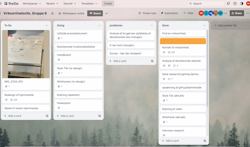
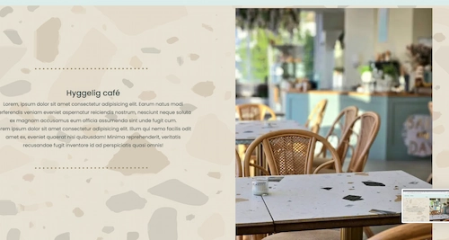
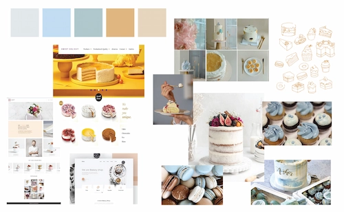
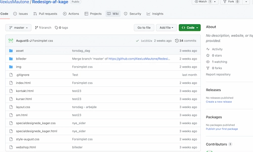

virksomhedsite

I dette projekt fik vi muligheden for at udforske gruppearbejde. Vi valgte hurtigt en virksomhed, som vi ønskede at redesigne. Vi følte, at der var potentiale for forbedring, samtidig med at der var rigeligt med muligheder for os at arbejde med.

For at fuldføre opgaven brugte jeg:
HTML, CSS, Adobe Photoshop, Adobe XD
Redesign af virksomheds website.
Process

Vi anvendte Trello til at organisere vores planer og opgaver, hvilket gjorde det nemmere at arbejde individuelt og holde styr på vores fremskridt. Derudover afholdt vi regelmæssige Scrum-møder, hvor vi kunne opdatere hinanden og sikre samarbejdet på tværs af projektet
Jeg udviklede café-siden med fokus på at skabe en indbydende følelse og samtidig sikre funktionalitet.
Vi lavede hver vores moodboard og eksperimenterede med forskellige stilarter. Senere forsøgte vi at finde en fælles stil, som vi følte passede godt til projektet.
Vi forsøgte at bruge GitHub til at samarbejde om kodningen, men vi stødte på problemer undervejs. Vi erkendte, at det ville have gjort processen meget lettere, hvis vi havde haft succes med at bruge GitHub.
